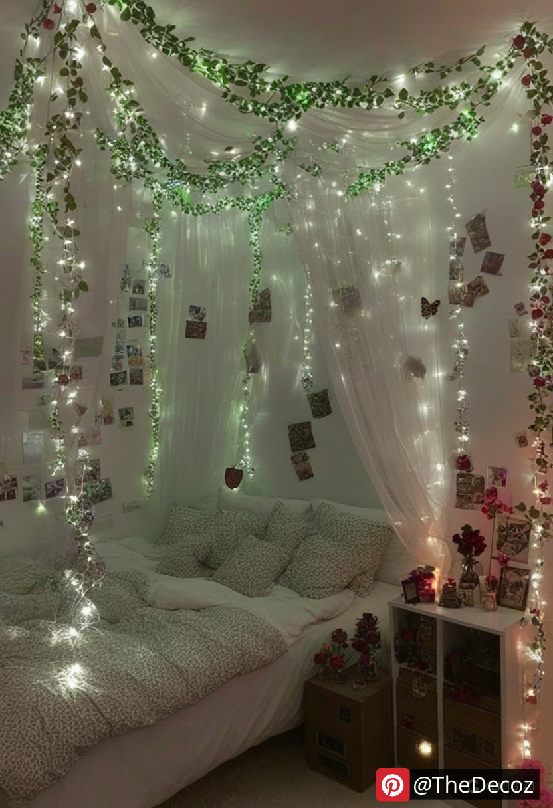
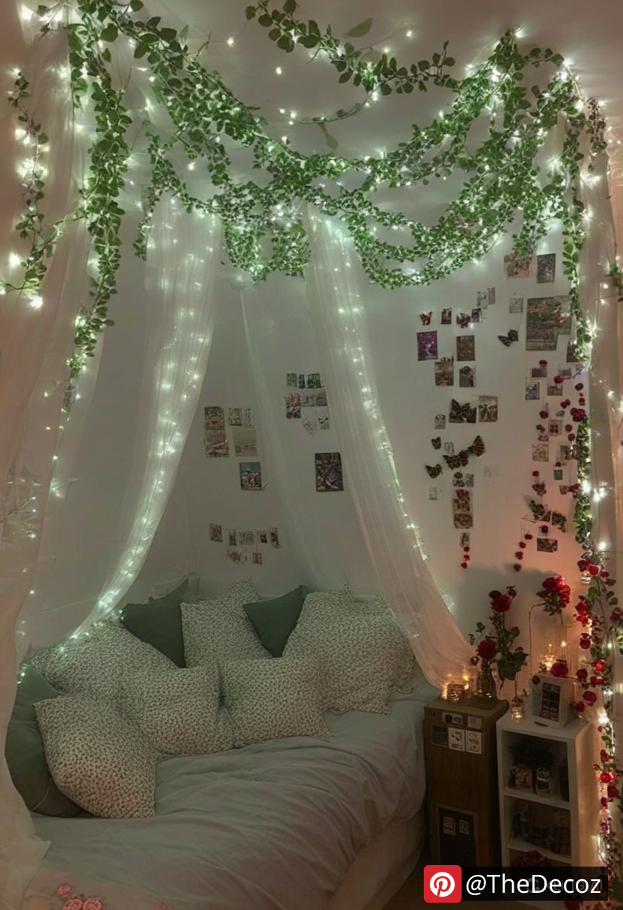
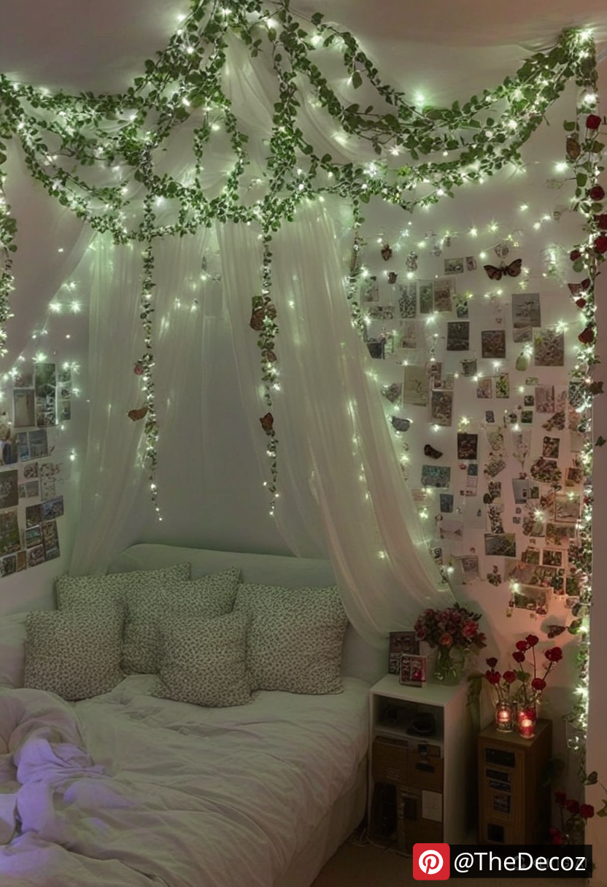
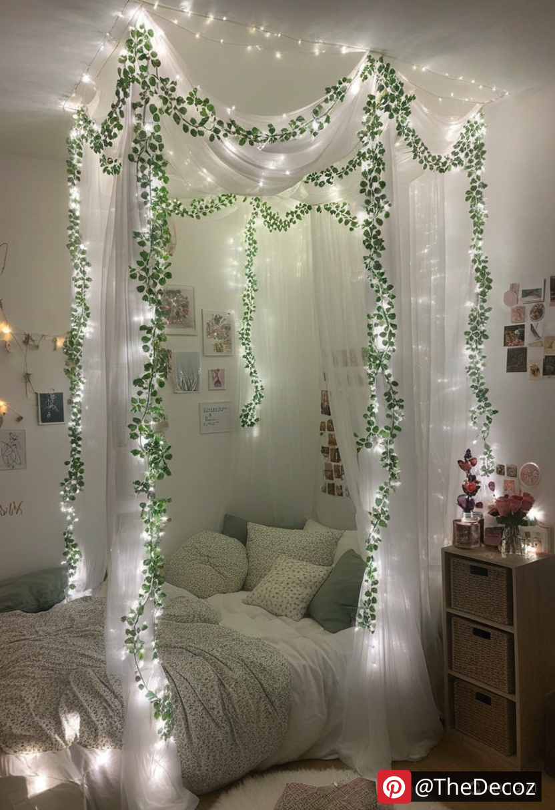
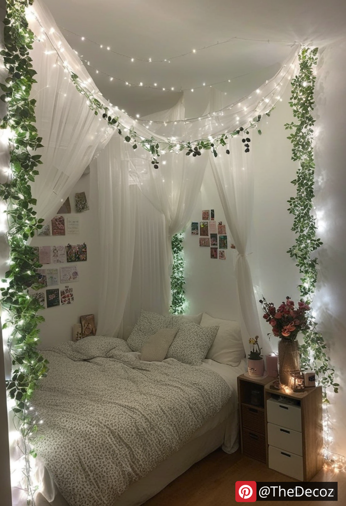

In the world of interior design, the fusion of nature-inspired elements with modern aesthetics has gained significant popularity. One of the standout trends enhancing both residential and commercial spaces is the use of Artificial Vine & Fairy Light Decor. This innovative decor solution effortlessly brings warmth, elegance, and a touch of whimsy to any environment. Here’s everything you need to know about incorporating artificial vines and fairy lights into your decor, along with tips to maximize their visual impact.
Low Maintenance, High Impact: Unlike real plants, artificial vines require no watering, sunlight, or pruning, making them a hassle-free option for busy individuals. Pairing them with fairy lights adds a magical glow without the constant need for maintenance.
Versatility: This decor style can be adapted to various settings, from cozy living rooms and chic cafes to outdoor patios and event spaces. The flexibility in design allows for creativity in arrangement and application.
Year-Round Appeal: While natural greenery might wilt or fade with seasons, artificial vines maintain their lush appearance throughout the year. Combined with fairy lights, they create a timeless aesthetic suitable for any season or occasion.
Creative Ways to Use Artificial Vine & Fairy Light Decor
Accent Walls: Transform a plain wall into a stunning focal point by draping artificial vines intertwined with warm fairy lights. This setup adds depth and texture, perfect for living rooms, bedrooms, or even office spaces.
Outdoor Ambiance: Enhance your garden, balcony, or patio with weather-resistant artificial vines and waterproof fairy lights. This combination creates a cozy and inviting atmosphere for evening gatherings or quiet relaxation.
Event Decor: Weddings, parties, and special events can be elevated with elegant vine and light arrangements. Use them to adorn arches, table centerpieces, or photo backdrops, adding a romantic and ethereal touch.
Furniture Accents: Wrap vines and lights around bed frames, mirrors, or bookshelves to infuse everyday furniture with a unique and charming flair.
Choose Quality Materials: Opt for high-quality, realistic-looking artificial vines and durable, energy-efficient LED fairy lights. This ensures longevity and a more authentic appearance.
Layering and Arrangement: Play with different lengths and thicknesses of vines to create a more natural and dynamic look. Strategically place fairy lights to highlight specific areas and add depth.
Color Coordination: Select vine shades and light hues that complement your existing decor. Warm white lights offer a cozy feel, while cool white or colored lights can add a modern or festive touch.
Safety First: Ensure that fairy lights are suitable for indoor or outdoor use as needed, and always follow safety guidelines to prevent overheating or electrical hazards.
Artificial Vine & Fairy Light Decor offers a perfect blend of nature-inspired beauty and modern charm, making it an ideal choice for anyone looking to enhance their living or working spaces. With their low maintenance, versatility, and timeless appeal, these decorative elements can transform any environment into a warm, inviting haven. Whether you’re decorating for a special event or simply refreshing your home’s aesthetic, incorporating artificial vines and fairy lights is a surefire way to create an enchanting and elegant atmosphere.
    